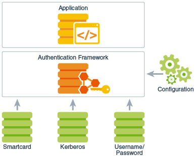

Java Security Overview
Java security includes a large set of APIs, tools, and implementations of commonly-used security algorithms, mechanisms, and protocols. The Java security APIs span a wide range of areas, including cryptography, public key infrastructure, secure communication, authentication, and access control. Java security technology provides the developer with a comprehensive security framework for writing applications, and also provides the user or administrator with a set of tools to securely manage applications.
Introduction to Java Security
The JDK is designed with a strong emphasis on security. At its core, the Java language itself is type-safe and provides automatic garbage collection, enhancing the robustness of application code. A secure class loading and verification mechanism ensures that only legitimate Java code is executed. The Java security architecture includes a large set of application programming interfaces (APIs), tools, and implementations of commonly-used security algorithms, mechanisms, and protocols.
The Java security APIs span a wide range of areas. Cryptographic and public key infrastructure (PKI) interfaces provide the underlying basis for developing secure applications. Interfaces for performing authentication and access control enable applications to guard against unauthorized access to protected resources.
The APIs allow for multiple interoperable implementations of algorithms and other security services. Services are implemented in providers, which are plugged into the JDK through a standard interface that makes it easy for applications to obtain security services without having to know anything about their implementations. This allows developers to focus on how to integrate security into their applications, rather than on how to actually implement complex security mechanisms.
The JDK includes a number of providers that implement a core set of security services. It also allows for additional custom providers to be installed. This enables developers to extend the platform with new security mechanisms.
The JDK is divided into modules. Modules that contain security APIs include the following:
Table 1-1 Modules That Contain Security APIs
| Module | Description |
|---|---|
| java.base | Defines the foundational APIs of Java SE. Contained packages include java.security, javax.crypto, javax.net.ssl, and javax.security.auth. |
| java.security.jgss | Defines the Java binding of the IETF Generic Security Services API (GSS-API). This module also contains GSS-API mechanisms including Kerberos v5 and SPNEGO. |
| java.security.sasl | Defines Java support for the IETF Simple Authentication and Security Layer (SASL). This module also contains SASL mechanisms including DIGEST-MD5, CRAM-MD5, and NTLM. |
| java.smartcardio | Defines the Java Smart Card I/O API. |
| java.xml.crypto | Defines the API for XML cryptography. |
| jdk.security.auth | Provides implementations of the javax.security.auth.* interfaces and various authentication modules. |
| jdk.security.jgss | Defines Java extensions to the GSS-API and an implementation of the SASL GSS-API mechanism. |
Java Language Security and Bytecode Verification
The Java language is designed to be type-safe and easy to use. It provides automatic memory management, garbage collection, and range-checking on arrays. This reduces the overall programming burden placed on developers, leading to fewer subtle programming errors and to safer, more robust code.
A compiler translates Java programs into a machine-independent bytecode representation. A bytecode verifier is invoked to ensure that only legitimate bytecodes are executed in the Java runtime. It checks that the bytecodes conform to the Java Language Specification and do not violate Java language rules or namespace restrictions. The verifier also checks for memory management violations, stack underflows or overflows, and illegal data typecasts. Once bytecodes have been verified, the Java runtime prepares them for execution.
-
private: Most restrictive modifier; access is not allowed outside the particular class in which the private member (a method, for example) is defined. -
protected: Allows access to any subclass or to other classes within the same package. -
Package-private: If not specified, then this is the default access level; allows access to classes within the same package.
-
public: No longer guarantees that the element is accessible everywhere; accessibility depends upon whether the package containing that element is exported by its defining module and whether that module is readable by the module containing the code that is attempting to access it.
Basic Security Architecture
The JDK defines a set of APIs spanning major security areas, including cryptography, public key infrastructure, authentication, secure communication, and access control. The APIs allow developers to easily integrate security into their application code.
The APIs are designed around the following principles:
- Implementation independence
- Applications do not need to implement security themselves. Rather, they can request security services from the JDK. Security services are implemented in providers (see the section Security Providers), which are plugged into the JDK via a standard interface. An application may rely on multiple independent providers for security functionality.
- Implementation interoperability
-
Providers are interoperable across applications. Specifically, an application is not bound to a specific provider if it does not rely on default values from the provider.
- Algorithm extensibility
- The JDK includes a number of built-in providers that implement a basic set of security services that are widely used today. However, some applications may rely on emerging standards not yet implemented, or on proprietary services. The JDK supports the installation of custom providers that implement such services.
Security Providers
The java.security.Provider class encapsulates the notion of a security provider in the Java platform. It specifies the provider's name and lists the security services it implements. Multiple providers may be configured at the same time and are listed in order of preference. When a security service is requested, the highest priority provider that implements that service is selected.
Applications rely on the relevant getInstance method to request a security service from an underlying provider.
For example, message digest creation represents one type of service available from providers. To request an implementation of a specific message digest algorithm, call the method java.security.MessageDigest.getInstance. The following statement requests a SHA-256 message digest implementation without specifying a provider name:
MessageDigest md = MessageDigest.getInstance("SHA-256");
The following figure illustrates how this statement obtains a SHA-256 message digest implementation. The providers are searched in preference order, and the implementation from the first provider supplying that particular algorithm, ProviderB, is returned.
Figure 1-1 Request SHA-256 Message Digest Implementation Without Specifying Provider

Description of "Figure 1-1 Request SHA-256 Message Digest Implementation Without Specifying Provider"
You can optionally request an implementation from a specific provider by specifying the provider's name. The following statement requests a SHA-256 message digest implementation from a specific provider, ProviderC:
MessageDigest md = MessageDigest.getInstance("SHA-256", "ProviderC");
The following figure illustrates how this statement requests a SHA-256 message digest implementation from a specific provider, ProviderC. In this case, the implementation from that provider is returned, even though a provider with a higher preference order, ProviderB, also supplies a SHA-256 implementation.
Figure 1-2 Request SHA-256 Message Digest Implementation from Specific Provider

Description of "Figure 1-2 Request SHA-256 Message Digest Implementation from Specific Provider"
For more information about cryptographic services, such as message digest algorithms, see the section Java Cryptography.
Oracle's implementation of the Java platform includes a number of built-in default providers that implement a basic set of security services that can be used by applications. Note that other vendor implementations of the Java platform may include different sets of providers that encapsulate vendor-specific sets of security services. The term built-in default providers refers to the providers available in Oracle's implementation.
File Locations
The following table lists locations of some security-related files and tools.
Table 1-2 Java security files and tools
| File Name or Tool Name | Location | Description |
|---|---|---|
|
|
|
Certain aspects of Java security, such as configuring the providers, may be customized by setting Security Properties. You may set Security Properties statically in the |
|
|
|
This is the default system policy file; see Security Policy. |
| Cryptographic policy directory |
|
This directory contains sets of jurisdiction policy files; see Cryptographic Strength Configuration. |
|
|
|
The |
|
Windows only: |
|
For more information about security-related tools, see Security Tools and Commands in Java Platform, Standard Edition Tools Reference. |
Java Cryptography
The Java cryptography architecture is a framework for accessing and developing cryptographic functionality for the Java platform.
It includes APIs for a large variety of cryptographic services, including the following:
- Message digest algorithms
- Digital signature algorithms
- Symmetric bulk and stream encryption
- Asymmetric encryption
- Password-based encryption (PBE)
- Elliptic Curve Cryptography (ECC)
- Key agreement algorithms
- Key generators
- Message Authentication Codes (MACs)
- Secure Random Number Generators
-
The
java.securityandjava.security.*packages contains classes that are not subject to export controls (likeSignatureandMessageDigest) -
The
javax.cryptopackage contains classes that are subject to export controls (likeCipherandKeyAgreement)
The cryptographic interfaces are provider-based, allowing for multiple and interoperable cryptography implementations. Some providers may perform cryptographic operations in software; others may perform the operations on a hardware token (for example, on a smart card device or on a hardware cryptographic accelerator). Providers that implement export-controlled services must be digitally signed by a certificate issued by the Oracle JCE Certificate Authority.
The Java platform includes built-in providers for many of the most commonly used cryptographic algorithms, including the RSA, DSA, and ECDSA signature algorithms, the AES encryption algorithm, the SHA-2 message digest algorithms, and the Diffie-Hellman (DH) and Elliptic Curve Diffie-Hellman (ECDH) key agreement algorithms. Most of the built-in providers implement cryptographic algorithms in Java code.
The Java platform also includes a built-in provider that acts as a bridge to a native PKCS#11 (v2.x) token. This provider, named SunPKCS11, allows Java applications to seamlessly access cryptographic services located on PKCS#11-compliant tokens.
On Windows, the Java platform includes a built-in provider that acts as a bridge to the native Microsoft CryptoAPI. This provider, named SunMSCAPI, allows Java applications to seamlessly access cryptographic services on Windows through the CryptoAPI.
Public Key Infrastructure
Public Key Infrastructure (PKI) is a term used for a framework that enables secure exchange of information based on public key cryptography. It allows identities (of people, organizations, etc.) to be bound to digital certificates and provides a means of verifying the authenticity of certificates. PKI encompasses keys, certificates, public key encryption, and trusted Certification Authorities (CAs) who generate and digitally sign certificates.
The Java platform includes APIs and provider support for X.509 digital certificates and Certificate Revocation Lists (CRLs), as well as PKIX-compliant certification path building and validation. The classes related to PKI are located in the java.security and java.security.cert packages.
Key and Certificate Storage
The Java platform provides for long-term persistent storage of cryptographic keys and certificates via key and certificate stores. Specifically, the java.security.KeyStore class represents a key store, a secure repository of cryptographic keys and/or trusted certificates (to be used, for example, during certification path validation), and the java.security.cert.CertStore class represents a certificate store, a public and potentially vast repository of unrelated and typically untrusted certificates. A CertStore may also store CRLs.
KeyStore and CertStore implementations are distinguished by types. The Java platform includes the standard PKCS11 and PKCS12 key store types (whose implementations are compliant with the corresponding PKCS specifications from RSA Security). It also contains a proprietary file-based key store type called JKS (which stands for Java Key Store), and a type called DKS (Domain Key Store) which is a collection of keystores that are presented as a single logical keystore.
The Java platform includes a special built-in key store, cacerts, that contains a number of certificates for well-known, trusted CAs. The keytool utility is able to list the certificates included in cacerts. See keytool in Java Platform, Standard Edition Tools Reference.
The SunPKCS11 provider mentioned in the section Java Cryptography includes a PKCS11 KeyStore implementation. This means that keys and certificates residing in secure hardware (such as a smart card) can be accessed and used by Java applications via the KeyStore API. Note that smart card keys may not be permitted to leave the device. In such cases, the java.security.Key object returned by the KeyStore API may simply be a reference to the key (that is, it would not contain the actual key material). Such a Key object can only be used to perform cryptographic operations on the device where the actual key resides.
The Java platform also includes an LDAP certificate store type (for accessing certificates stored in an LDAP directory), as well as an in-memory Collection certificate store type (for accessing certificates managed in a java.util.Collection object).
Public Key Infrastructure Tools
There are two built-in tools for working with keys, certificates, and key stores:
-
keytoolcreates and manages key stores. Use it to perform the following tasks:- Create public/private key pairs
- Display, import, and export X.509 v1, v2, and v3 certificates stored as files
- Create X.509 certificates
- Issue certificate (PKCS#10) requests to be sent to CAs
- Create certificates based on certificate requests
- Import certificate replies (obtained from the CAs sent certificate requests)
- Designate public key certificates as trusted
- Accept a password and store it securely as a secret key
-
jarsignersigns JAR files and verifies signatures on signed JAR files. The Java ARchive (JAR) file format enables the bundling of multiple files into a single file. Typically, a JAR file contains the class files and auxiliary resources associated with applets and applications.
-
Use
keytoolto generate or import appropriate keys and certificates into your key store (if they are not there already). -
Use the
jartool to package the code in a JAR file. -
Use the
jarsignertool to sign the JAR file. Thejarsignertool accesses a key store to find any keys and certificates needed to sign a JAR file or to verify the signature of a signed JAR file.Note:
jarsignercan optionally generate signatures that include a timestamp. Systems that verify JAR file signatures can check the timestamp and accept a JAR file that was signed while the signing certificate was valid rather than requiring the certificate to be current. (Certificates typically expire annually, and it is not reasonable to expect JAR file creators to re-sign deployed JAR files annually.)
See keytool and jarsigner in Java Platform, Standard Edition Tools Reference.
Authentication
Authentication is the process of determining the identity of a user. In the context of the Java runtime environment, it is the process of identifying the user of an executing Java program. In certain cases, this process may rely on the services described in the section Java Cryptography.
The Java platform provides APIs that enable an application to perform user authentication via pluggable login modules. Applications call into the LoginContext class (in the javax.security.auth.login package), which in turn references a configuration. The configuration specifies which login module (an implementation of the javax.security.auth.spi.LoginModule interface) is to be used to perform the actual authentication.
Since applications solely talk to the standard LoginContext API, they can remain independent from the underlying plug-in modules. New or updated modules can be plugged in for an application without having to modify the application itself. The following figure illustrates the independence between applications and underlying login modules:
Figure 1-3 Authentication Login Modules Plugging into the Authentication Framework
Description of "Figure 1-3 Authentication Login Modules Plugging into the Authentication Framework"
It is important to note that although login modules are pluggable components that can be configured into the Java platform, they are not plugged in via security providers. Therefore, they do not follow the provider searching model as described in the section Security Providers. Instead, as is shown in Figure 1-3, login modules are administered by their own unique configuration.
The Java platform provides the following built-in login modules, all in the com.sun.security.auth.module package:
Krb5LoginModulefor authentication using Kerberos protocolsJndiLoginModulefor username/password authentication using LDAP or NIS databasesKeyStoreLoginModulefor logging into any type of key store, including a PKCS#11 token key store
Authentication can also be achieved during the process of establishing a secure communication channel between two peers. The Java platform provides implementations of a number of standard communication protocols, which are discussed in the section Secure Communication.
Secure Communication
The data that travels across a network can be accessed by someone who is not the intended recipient. When the data includes private information, such as passwords and credit card numbers, steps must be taken to make the data unintelligible to unauthorized parties. It is also important to ensure that you are sending the data to the appropriate party, and that the data has not been modified, either intentionally or unintentionally, during transport.
Cryptography forms the basis required for secure communication; see the section Java Cryptography. The Java platform also provides API support and provider implementations for a number of standard secure communication protocols.
TLS and DTLS Protocols
Transport Layer Security (TLS) and its predecessor, Secure Sockets Layer (SSL), are cryptographic protocols which provide a secure channel between two communication peers. TLS uses a combination of cryptographic processes by providing authentication, confidentiality and integrity properties for communication over a untrusted or potential hostile network. TLS runs over a reliable, stream-oriented transport channel, typically Transport Control Protocol (TCP). TLS is application protocol independent. Higher-level protocols, for example Hypertext Transfer Protocol (HTTP), can layer on top of TLS transparently.
The Datagram Transport Layer Security (DTLS) protocols are based on the stream-oriented TLS protocols and are intended to provider similar security properties for datagram transport, like User Datagram Protocol (UDP), which does not provide reliable or in-order delivery of data.
The JDK provides APIs and an implementation of the SSL, TLS, and DTLS protocols that includes functionality for data encryption, message integrity, and server and client authentication. Applications can use (D)TLS to provide for the secure passage of data between two peers over any application protocol, such as HTTP on top of TCP/IP.
The javax.net.ssl.SSLSocket class represents a network socket that encapsulates TLS support on top of a normal stream socket (java.net.Socket). Some applications might want to use alternate data transport abstractions (for example, New-I/O); the javax.net.ssl.SSLEngine class is available to produce and consume TLS/DTLS packets.
The JDK also includes APIs that support the notion of pluggable (provider-based) key managers and trust managers. A key manager is encapsulated by the javax.net.ssl.KeyManager class, and manages the keys used to perform authentication. A trust manager is encapsulated by the TrustManager class (in the same package), and makes decisions about who to trust based on certificates in the key store it manages.
The JDK includes a built-in provider that implements the SSL/TLS/DTLS protocols:
Simple Authentication and Security Layer (SASL)
Simple Authentication and Security Layer (SASL) is an Internet standard that specifies a protocol for authentication and optional establishment of a security layer between client and server applications. SASL defines how authentication data is to be exchanged, but does not itself specify the contents of that data. It is a framework into which specific authentication mechanisms that specify the contents and semantics of the authentication data can fit. There are a number of standard SASL mechanisms defined by the Internet community for various security levels and deployment scenarios.
The Java SASL API, which is in the java.security.sasl module, defines classes and interfaces for applications that use SASL mechanisms. It is defined to be mechanism-neutral; an application that uses the API need not be hardwired into using any particular SASL mechanism. Applications can select the mechanism to use based on desired security features. The API supports both client and server applications. The javax.security.sasl.Sasl class is used to create SaslClient and SaslServer objects.
SASL mechanism implementations are supplied in provider packages. Each provider may support one or more SASL mechanisms and is registered and invoked via the standard provider architecture.
The Java platform includes a built-in provider that implements the following SASL mechanisms:
- CRAM-MD5, DIGEST-MD5, EXTERNAL, GSSAPI, NTLM, and PLAIN client mechanisms
- CRAM-MD5, DIGEST-MD5, GSSAPI, and NTLM server mechanisms
Generic Security Service API and Kerberos
The Java platform contains an API with the Java language bindings for the Generic Security Service Application Programming Interface (GSS-API), which is in the java.security.jgss module. GSS-API offers application programmers uniform access to security services atop a variety of underlying security mechanisms. The Java GSS-API currently requires use of a Kerberos v5 mechanism, and the Java platform includes a built-in implementation of this mechanism. At this time, it is not possible to plug in additional mechanisms.
Note:
TheKrb5LoginModule mentioned in the section Authentication can be used in conjunction with the GSS Kerberos mechanism.
The Java platform also includes a built-in implementation of the Simple and Protected GSS-API Negotiation Mechanism (SPNEGO) GSS-API mechanism.
Before two applications can use GSS-API to securely exchange messages between them, they must establish a joint security context. The context encapsulates shared state information that might include, for example, cryptographic keys. Both applications create and use an org.ietf.jgss.GSSContext object to establish and maintain the shared information that makes up the security context. Once a security context has been established, it can be used to prepare secure messages for exchange.
The Java GSS APIs are in the org.ietf.jgss package. The Java platform also defines basic Kerberos classes, like KerberosPrincipal, KerberosTicket, KerberosKey, and KeyTab, which are located in the javax.security.auth.kerberos package.
Access Control
The access control architecture in the Java platform protects access to sensitive resources (for example, local files) or sensitive application code (for example, methods in a class). All access control decisions are mediated by a security manager, represented by the java.lang.SecurityManager class. A SecurityManager must be installed into the Java runtime in order to activate the access control checks.
Local applications executed via the java command are by default not run with a SecurityManager installed. In order to run local applications with a SecurityManager, either the application itself must programmatically set one via the setSecurityManager method (in the java.lang.System class), or java must be invoked with a -Djava.security.manager argument on the command line.
Permissions
A permission represents access to a system resource. In order for a resource access to be allowed for an applet (or an application running with a security manager), the corresponding permission must be explicitly granted to the code attempting the access.
When Java code is loaded by a class loader into the Java runtime, the class loader automatically associates the following information with that code:
- Where the code was loaded from
- Who signed the code (if anyone)
- Default permissions granted to the code
This information is associated with the code regardless of whether the code is downloaded over an untrusted network (e.g., an applet) or loaded from the filesystem (e.g., a local application). The location from which the code was loaded is represented by a URL, the code signer is represented by the signer's certificate chain, and default permissions are represented by java.security.Permission objects.
The default permissions automatically granted to downloaded code include the ability to make network connections back to the host from which it originated. The default permissions automatically granted to code loaded from the local filesystem include the ability to read files from the directory it came from, and also from subdirectories of that directory.
Note that the identity of the user executing the code is not available at class loading time. It is the responsibility of application code to authenticate the end user if necessary (see the section Authentication). Once the user has been authenticated, the application can dynamically associate that user with executing code by invoking the doAs method in the javax.security.auth.Subject class.
Security Policy
A limited set of default permissions are granted to code by class loaders. Administrators have the ability to flexibly manage additional code permissions via a security policy.
Java SE encapsulates the notion of a security policy in the java.security.Policy class. There is only one Policy object installed into the Java runtime at any given time. The basic responsibility of the Policy object is to determine whether access to a protected resource is permitted to code (characterized by where it was loaded from, who signed it, and who is executing it). How a Policy object makes this determination is implementation-dependent. For example, it may consult a database containing authorization data, or it may contact another service.
Java SE includes a default Policy implementation that reads its authorization data from one or more ASCII (UTF-8) files configured in the security properties file. These policy files contain the exact sets of permissions granted to code: specifically, the exact sets of permissions granted to code loaded from particular locations, signed by particular entities, and executing as particular users. The policy entries in each file must conform to a documented proprietary syntax, and may be composed via a simple text editor or the graphical policytool utility.
Note:
Thepolicytool is deprecated and marked for removal in the next major JDK release.
Access Control Enforcement
The Java runtime keeps track of the sequence of Java calls that are made as a program executes. When access to a protected resource is requested, the entire call stack, by default, is evaluated to determine whether the requested access is permitted.
As mentioned previously, resources are protected by the SecurityManager. Security-sensitive code in the JDK and in applications protects access to resources via code like the following:
SecurityManager sm = System.getSecurityManager();
if (sm != null) {
sm.checkPermission(perm);
}
The Permission object perm corresponds to the requested access. For example, if an attempt is made to read the file /tmp/abc, the permission may be constructed as follows:
Permission perm = new java.io.FilePermission("/tmp/abc", "read");
The default implementation of SecurityManager delegates its decision to the java.security.AccessController implementation. The AccessController traverses the call stack, passing to the installed security Policy each code element in the stack, along with the requested permission (for example, the FilePermission in the previous example). The Policy determines whether the requested access is granted, based on the permissions configured by the administrator. If access is not granted, the AccessController throws a java.lang.SecurityException.
Figure 1-4 illustrates access control enforcement. In this particular example, there are initially two elements on the call stack, ClassA and ClassB. ClassA invokes a method in ClassB, which then attempts to access the file /tmp/abc by creating an instance of java.io.FileInputStream. The FileInputStream constructor creates a FilePermission, perm, as shown above, and then passes perm to the SecurityManager class's checkPermission method. In this particular case, only the permissions for ClassA and ClassB need to be checked, because all classes in the java.base module, including FileInputStream, SecurityManager, and AccessController, automatically receives all permissions.
In this example, ClassA and ClassB have different code characteristics – they come from different locations and have different signers. Each may have been granted a different set of permissions. The AccessController only grants access to the requested file if the Policy indicates that both classes have been granted the required FilePermission.
Figure 1-4 Controlling Access to Resources

Description of "Figure 1-4 Controlling Access to Resources"
XML Signature
The Java XML Digital Signature API is a standard Java API for generating and validating XML Signatures.
XML Signatures can be applied to data of any type, XML or binary (see XML Signature Syntax and Processing). The resulting signature is represented in XML. An XML Signature can be used to secure your data and provide data integrity, message authentication, and signer authentication.
The API is designed to support all of the required or recommended features of the W3C Recommendation for XML-Signature Syntax and Processing. The API is extensible and pluggable and is based on the Java Cryptography Service Provider Architecture.
The Java XML Digital Signature API, which is in the java.xml.crypto module, consists of six packages:
javax.xml.cryptojavax.xml.crypto.dsigjavax.xml.crypto.dsig.keyinfojavax.xml.crypto.dsig.specjavax.xml.crypto.domjavax.xml.crypto.dsig.dom
Additional Information about Java Security
Find additional Java security documentation at Java SE Security.
Note:
Historically, as new types of security services were added to Java SE (sometimes initially as extensions), various acronyms were used to refer to them. Since these acronyms are still in use in the Java security documentation, here is an explanation of what they represent:-
JSSE (Java Secure Socket Extension) refers to the SSL-related services as described in the section TLS and DTLS Protocols
-
JCE (Java Cryptography Extension) refers to cryptographic services as described in the section Java Cryptography
-
JAAS (Java Authentication and Authorization Service) refers to the authentication and user-based access control services as described in the sections Authentication and Access Control, respectively
Java Security Classes Summary
The following table describes some of the names, packages, and usage of the Java security classes and interfaces..
Table 1-3 Java security packages and classes
| Package | Class/Interface Name | Usage | Module |
|---|---|---|---|
java.lang |
SecurityException |
Indicates a security violation | java.base |
java.lang |
SecurityManager |
Mediates all access control decisions | java.base |
java.lang |
System |
Installs the SecurityManager | java.base |
java.security |
AccessController |
Called by default implementation of SecurityManager to make access control decisions | java.base |
java.security |
DomainLoadStoreParameter |
Stores parameters for the Domain keystore (DKS) | java.base |
java.security |
Key |
Represents a cryptographic key | java.base |
java.security |
KeyStore |
Represents a repository of keys and trusted certificates | java.base |
java.security |
MessageDigest |
Represents a message digest | java.base |
java.security |
Permission |
Represents access to a particular resource | java.base |
java.security |
PKCS12Attribute |
Supports attributes in PKCS12 keystores | java.base |
java.security |
Policy |
Encapsulates the security policy | java.base |
java.security |
Provider |
Encapsulates security service implementations | java.base |
java.security |
Security |
Manages security providers and Security Properties | java.base |
java.security |
Signature |
Creates and verifies digital signatures | java.base |
java.security.cert |
Certificate |
Represents a public key certificate | java.base |
java.security.cert |
CertStore |
Represents a repository of unrelated and typically untrusted certificates | java.base |
java.security.cert |
CRL |
Represents a CRL | java.base |
javax.crypto |
Cipher |
Performs encryption and decryption | java.base |
javax.crypto |
KeyAgreement |
Performs a key exchange | java.base |
javax.net.ssl |
KeyManager |
Manages keys used to perform SSL/TLS authentication | java.base |
javax.net.ssl |
SSLEngine |
Produces/consumes SSL/TLS packets, allowing the application freedom to choose a transport mechanism | java.base |
javax.net.ssl |
SSLSocket |
Represents a network socket that encapsulates SSL/TLS support on top of a normal stream socket | java.base |
javax.net.ssl |
TrustManager |
Makes decisions about who to trust in SSL/TLS interactions (for example, based on trusted certificates in key stores) | java.base |
javax.security.auth |
Subject |
Represents a user | java.base |
javax.security.auth.kerberos |
KerberosPrincipal |
Represents a Kerberos principal | java.base |
javax.security.auth.kerberos |
KerberosTicket |
Represents a Kerberos ticket | java.base |
javax.security.auth.kerberos |
KerberosKey |
Represents a Kerberos key | java.base |
javax.security.auth.kerberos |
KerberosTab |
Represents a Kerberos keytab file | java.base |
javax.security.auth.login |
LoginContext |
Supports pluggable authentication | java.base |
javax.security.auth.spi |
LoginModule |
Implements a specific authentication mechanism | java.base |
javax.security.sasl |
Sasl |
Creates SaslClient and SaslServer objects | java.security.sasl |
javax.security.sasl |
SaslClient |
Performs SASL authentication as a client | java.security.sasl |
javax.security.sasl |
SaslServer |
Performs SASL authentication as a server | java.security.sasl |
org.ietf.jgss |
GSSContext |
Encapsulates a GSS-API security context and provides the security services available via the context | java.security.jgss |
com.sun.security.auth.module |
JndiLoginModule |
Performs username/password authentication using LDAP or NIS | jdk.security.auth |
com.sun.security.auth.module |
KeyStoreLoginModule |
Performs authentication based on key store login | jdk.security.auth |
com.sun.security.auth.module |
Krb5LoginModule |
Performs authentication using Kerberos protocols | jdk.security.auth |
Deprecated Security APIs Marked for Removal
The following APIs are deprecated and eligible to be removed in a future release.
You can check the API dependencies using the jdeprscan tool. See jdeprscan in Java Platform, Standard Edition Tools Reference.
The following classes are deprecated and marked for removal:
- com.sun.security.auth.PolicyFile
- com.sun.security.auth.SolarisNumericGroupPrincipal
- com.sun.security.auth.SolarisNumericUserPrincipal
- com.sun.security.auth.SolarisPrincipal
- com.sun.security.auth.X500Principal
- com.sun.security.auth.module.SolarisLoginModule
- com.sun.security.auth.module.SolarisSystem
- java.lang.SecurityManager.getInCheck
- java.lang.SecurityManager.checkMemberAccess
- java.lang.SecurityManager.classDepth
- java.lang.SecurityManager.currentClassLoader
- java.lang.SecurityManager.currentLoadedClass
- java.lang.SecurityManager.inClass
- java.lang.SecurityManager.inClassLoader
- java.lang.SecurityManager.checkAwtEventQueueAccess
- java.lang.SecurityManager.checkTopLevelWindow
- java.lang.SecurityManager.checkSystemClipboardAccess
The following field is deprecated and marked for removal:
- java.lang.SecurityManager.incheck
Security Tools Summary
The following tables describe Java security and Kerberos-related tools.
See Security Tools and Commands in Java Platform, Standard Edition Tools Reference.
Table 1-4 Java Security Tools
| Tool | Usage |
|---|---|
jar |
Creates Java Archive (JAR) files |
jarsigner |
Signs and verifies signatures on JAR files |
keytool |
Creates and manages key stores |
policytool |
Creates and edits policy files for use with default Policy implementation
Note: policytool is deprecated and marked for removal.
|
There are also three Kerberos-related tools that are shipped with the JDK for Windows. Equivalent functionality is provided in tools of the same name that are automatically part of the Solaris and Linux operating environments.
Table 1-5 Kerberos-related Tools
| Tool | Usage |
|---|---|
kinit |
Obtains and caches Kerberos ticket-granting tickets |
klist |
Lists entries in the local Kerberos credentials cache and key table |
ktab |
Manages the names and service keys stored in the local Kerberos key table |
Built-In Providers
The Java SE implementation from Oracle includes a number of built-in provider packages. See JDK Providers Documentation.